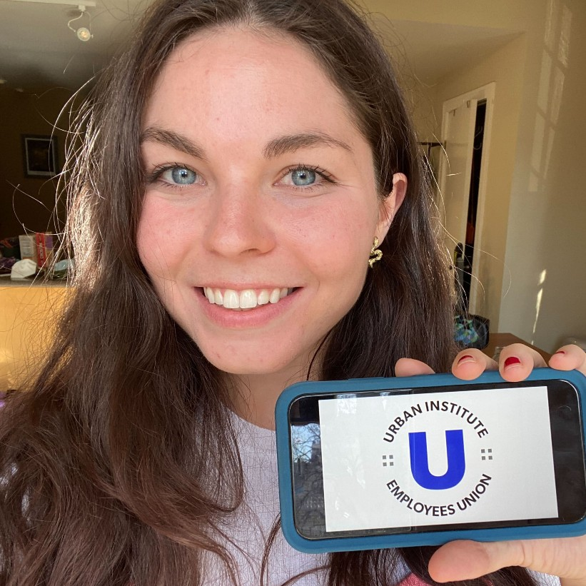

Our Mission
We, the employees of the Urban Institute, believe strongly in its promise of a workplace where “all staff feel respected, heard, engaged, and valued”. Our union is motivated both by our commitment to Urban’s mission of bringing rigorous research to policy debates and by our commitment to improving Urban by ensuring it is an inclusive and nurturing workplace for all employees. We believe that nobody can represent workers’ interests better than workers themselves and that our perspectives are vital to Urban’s longevity and its institutional ethics. And we believe that until we unite to strengthen our voices and decisionmaking power in conversation with management, Urban cannot make good on the workplace it promises.
As a union we commit to centering and supporting our Black, Brown, Indigenous, and Latinx colleagues; our queer and trans colleagues; and our colleagues with disabilities. We commit to being intentional about racial progress in performing our work, promoting a culture in which everyone is welcome to bring their full selves into work, and fighting for each other’s well-being through equitable pay, treatment, promotion processes, leadership, and mental health resources at Urban.
Together we will:
Create Accountable Treatment and Compensation Structures
Promote Transparency in Institutional Decisionmaking
Prioritize Diversity and Inclusion
Develop More Equitable Partnerships with Communities
Boost Morale
Bargaining Committee
Our union is represented by a Bargaining Committee (BC) listed below. We are in charge of communicating with management and negotiating our first Collective Bargaining Agreement (CBA). we aim to have around 11-13 members on the BC, but we may have slightly more or less as people come and leave Urban.
Please feel free to get in touch with any of us inddividually via Slack or email.
| Name | Center | |
|---|---|---|
| Ebonie Megibow | METRO |  |
| Sonia Torres Rodríguez | METRO | |
| Susan Nembhard | JPC |  |
| Lauren Farrell | JPC |  |
| Lily Robin | JPC |  |
| Livia Mucciolo | TPC | |
| Ajjit Narayanan | TECH |  |
| Vincent Pancini | HPC | |
| Clara Alvarez Caraveo | HPC |  |
| Nicholas Laughlin | COMM |  |
| Ben Falk | DEV |  |
| Katherine DePalma | DEV | |
| Evan Spath | IBP | |
| Jacqueline Rayfield | IBP |  |
| Batia Katz | LHP |  |
| Alex Carther | LHP |  |
| Jessica Perez | LAB |